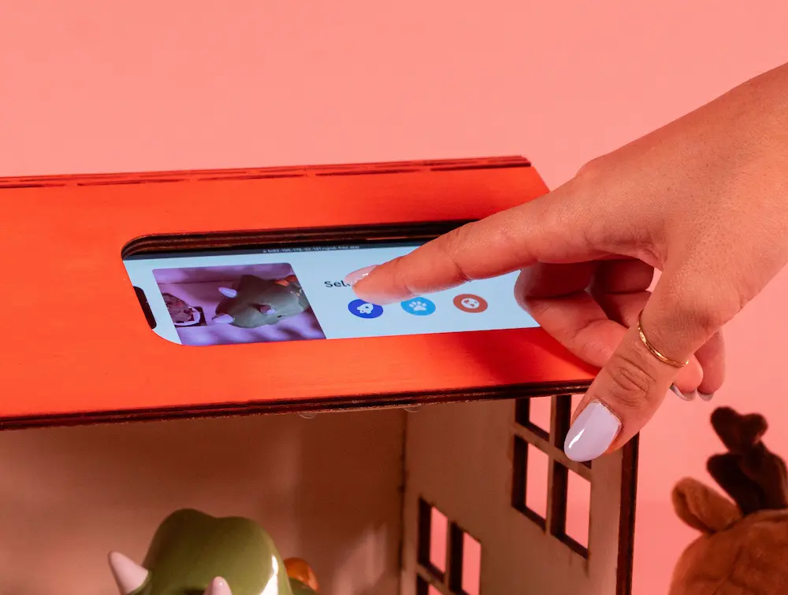
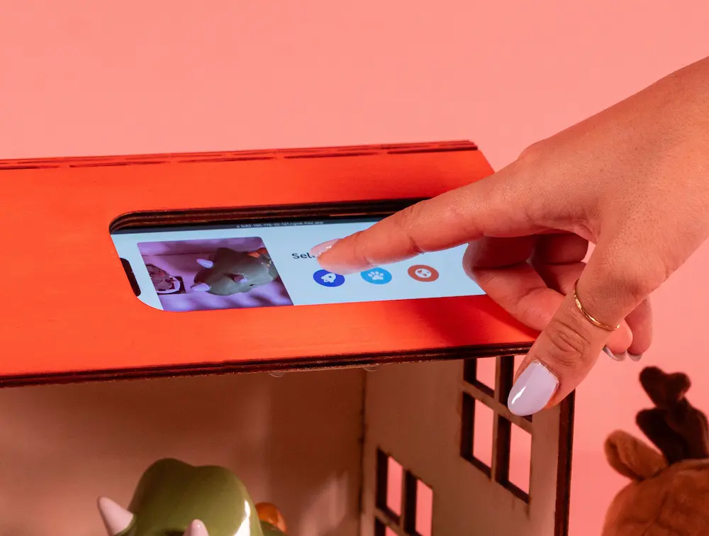

ToyTales
Toy tales is an
AI-powered storytelling house that
transforms children’s favourite objects into the heroes of the stories. ToyTales blends physical play and real-time story generation into a screen-free interaction.
Exhibited at Bern Design Festival 2025
Brief
ToyTales started during the course as a response to the brief
“Things That Think”. My classmate and
I built the first prototype driven by our shared interest in
storytelling and playful design.
We saw the potential of ToyTales going beyond the classroom,
so we developed the
second prototype that we later exhibited.
Outcome and key learnings
A house, symbol of comfort and safety, that by blending traditional play and technologysparks imagination and creativity.
Refined UX for young children through physical interactions.
Learned how to adapt and showcase a project in a public exhibition setting.
First prototype
The initial version was
built in a week: screen-based interaction, a laser-cut house,
and a phone acting as the interface.
A simple web app let users select a theme and trigger
AI-generated narration.
Core components:
- Screen UI for story selection and narration control
- Three story types: space, animals, and adventure
- A solid user flow
- Early branding direction with visual theme icons
Physical prototype

 

Screen designs
We had the basics. What we needed next was that sense of magic that makes something truly playful.
Second prototype
After many iterations (and a few long nights in fablab), the
second version focused on
removing screens, refining the house, and upgrading the
stories.
The goal was to bring the physical and digital closer together
and create a truly magical feel to the interaction.
What changed:
- CNC cut + 3D-printed house with refined shape
- Rotary switch for choosing themes and a physical button to begin narration
- Expanded stories with tone and voice expression
- Updated user journey: place toy(s) → choose theme → press play → listen
- Rebrand and visual communication design for the Bern Design Festival
Final outcome


The result is a
screen-free storytelling house that
blends traditional play with real-time AI storytelling, a more
tangible, surprising, and fun "smart" toy.
And more improvements are yet to come :)
Learnings
ToyTales taught me a lot — it sharpened my ability to prototype quickly, adapt under pressure, and translate ideas into something playful and physical.
- Prototyping fast helps show ideas, but iteration brings clarity and depth to the work
- Designing for kids means simplifying with a lot of care and attention to details
- Quick thinking and flexible problem-solving are key when turning ideas into something real
- For festivals and exhibitions: always make the speaker louder than you think it needs to be
- In exhibition settings people are usually afraid to touch your work unless you show them how

The glow up
Like what you see? Just want to connect?
Let’s build something meaningful together :)
Copied!